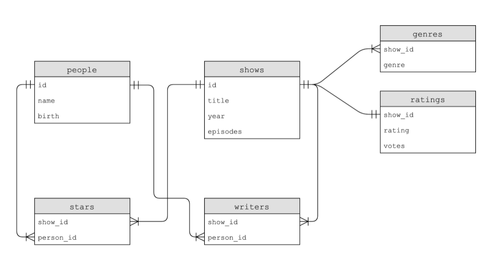
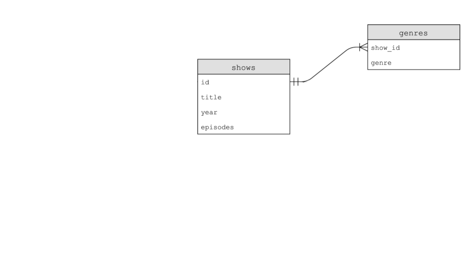

讲座 7
- 欢迎!
- Flat-File Database
- Relational 数据库
- IMDb
JOINs- Indexes
- Using SQL in Python
- Race Conditions
- SQL Injection Attacks
- Summing Up
欢迎!
- In 上一页 周次, we introduced you to Python, a high-level 编程 language that utilized the same building blocks we learned in C.
- This 周, we will be continuing 更多 syntax related to Python.
- Further, we will be integrating this knowledge with data.
- Finally, we will be discussing SQL or Structured Query Language.
- Overall, one of the goals of this 课程 is to learn to program generally – not simply how to program in the languages described in this 课程.
Flat-File Database
- As you have likely seen before, data can often be described in patterns of columns and tables.
- Spreadsheets like those created in Microsoft Excel and Google Sheets can be outputted to a
csvor comma-separated values file. - If you look at a
csvfile, you’ll notice that the file is flat in that all of our data is stored in a single table represented by a text file. We call this form of data a flat-file database. - Python comes with native support for
csvfiles. -
In your terminal window, type
code favorites.pyand write code as follows:# Prints all favorites in CSV using csv.reader import csv # Open CSV file with open("favorites.csv", "r") as file: # Create reader reader = csv.reader(file) # Skip header row next(reader) # Iterate over CSV file, printing each favorite for row in reader: print(row[1])Notice that the
csvlibrary is imported. Further, we created areaderthat will hold the result ofcsv.reader(file). Thecsv.readerfunction reads each row from the file, and in our code we store the results inreader.print(row[1]), therefore, will print the language from thefavorites.csvfile. -
You can improve your code as follows:
# Stores favorite in a variable import csv # Open CSV file with open("favorites.csv", "r") as file: # Create reader reader = csv.reader(file) # Skip header row next(reader) # Iterate over CSV file, printing each favorite for row in reader: favorite = row[1] print(favorite)Notice that
favoriteis stored and then printed. Also notice that we use thenextfunction to skip to the 下一页 line of our reader. -
Python also allows you to index by the keys of a list. Modify your code as follows:
# Prints all favorites in CSV using csv.DictReader import csv # Open CSV file with open("favorites.csv", "r") as file: # Create DictReader reader = csv.DictReader(file) # Iterate over CSV file, printing each favorite for row in reader: print(row["language"])Notice that this 示例 directly utilizes the
languagekey in the print statement. -
To count the number of favorite languages expressed in the
csvfile, we can do the following:# Counts favorites using variables import csv # Open CSV file with open("favorites.csv", "r") as file: # Create DictReader reader = csv.DictReader(file) # Counts scratch, c, python = 0, 0, 0 # Iterate over CSV file, counting favorites for row in reader: favorite = row["language"] if favorite == "Scratch": scratch += 1 elif favorite == "C": c += 1 elif favorite == "Python": python += 1 # Print counts print(f"Scratch: {scratch}") print(f"C: {c}") print(f"Python: {python}")Notice that each language is counted using
ifstatements. -
Python allows us to use a dictionary to count the
countsof each language. Consider the following improvement upon our code:# Counts favorites using dictionary import csv # Open CSV file with open("favorites.csv", "r") as file: # Create DictReader reader = csv.DictReader(file) # Counts counts = {} # Iterate over CSV file, counting favorites for row in reader: favorite = row["language"] if favorite in counts: counts[favorite] += 1 else: counts[favorite] = 1 # Print counts for favorite in counts: print(f"{favorite}: {counts[favorite]}")Notice that the value in
countswith the keyfavoriteis incremented when it exists already. If it does not exist, we definecounts[favorite]and set it to 1. Further, the formatted string has been improved to present thecounts[favorite]. -
Python also allows sorting
counts. Improve your code as follows:# Sorts favorites by key import csv # Open CSV file with open("favorites.csv", "r") as file: # Create DictReader reader = csv.DictReader(file) # Counts counts = {} # Iterate over CSV file, counting favorites for row in reader: favorite = row["language"] if favorite in counts: counts[favorite] += 1 else: counts[favorite] = 1 # Print counts for favorite in sorted(counts): print(f"{favorite}: {counts[favorite]}")Notice the
sorted(counts)at the bottom of the code. -
If you look at the parameters for the
sortedfunction in the Python documentation, you will find it has many built-in parameters. You can leverage some of these built-in parameters as follows:# Sorts favorites by value import csv # Open CSV file with open("favorites.csv", "r") as file: # Create DictReader reader = csv.DictReader(file) # Counts counts = {} # Iterate over CSV file, counting favorites for row in reader: favorite = row["language"] if favorite in counts: counts[favorite] += 1 else: counts[favorite] = 1 def get_value(language): return counts[language] # Print counts for favorite in sorted(counts, key=get_value, reverse=True): print(f"{favorite}: {counts[favorite]}")Notice that a function called
get_valueis created, and that the function itself is passed in as an argument to thesortedfunction. Thekeyargument allows you to tell Python the method you wish to use to 排序 items. -
Python has a unique ability that we have not seen to 日期: It allows for the utilization of anonymous or
lambdafunctions. These functions can be utilized when you want to not bother creating an entirely different function. Notice the following modification:# Sorts favorites by value using lambda function import csv # Open CSV file with open("favorites.csv", "r") as file: # Create DictReader reader = csv.DictReader(file) # Counts counts = {} # Iterate over CSV file, counting favorites for row in reader: favorite = row["language"] if favorite in counts: counts[favorite] += 1 else: counts[favorite] = 1 # Print counts for favorite in sorted(counts, key=lambda language: counts[language], reverse=True): print(f"{favorite}: {counts[favorite]}")Notice that the
get_valuefunction has been removed. Instead,lambda language: counts[language]does in one line what our 上一页 two-line function did. -
We can change the column we are examining, focusing on our favorite problem instead:
# Favorite problem instead of favorite language import csv # Open CSV file with open("favorites.csv", "r") as file: # Create DictReader reader = csv.DictReader(file) # Counts counts = {} # Iterate over CSV file, counting favorites for row in reader: favorite = row["problem"] if favorite in counts: counts[favorite] += 1 else: counts[favorite] = 1 # Print counts for favorite in sorted(counts, key=lambda problem: counts[problem], reverse=True): print(f"{favorite}: {counts[favorite]}")Notice that
problemreplacedlanguage. -
What if we wanted to allow users to provide input directly in the terminal? We can modify our code, leveraging our 上一页 knowledge 关于 user input:
# Favorite problem instead of favorite language import csv # Open CSV file with open("favorites.csv", "r") as file: # Create DictReader reader = csv.DictReader(file) # Counts counts = {} # Iterate over CSV file, counting favorites for row in reader: favorite = row["problem"] if favorite in counts: counts[favorite] += 1 else: counts[favorite] = 1 # Print count favorite = input("Favorite: ") if favorite in counts: print(f"{favorite}: {counts[favorite]}")Notice how compact our code is compared to our experience in C.
Relational 数据库
- Google, Twitter, and Meta all use relational 数据库 to store their information at scale.
- Relational 数据库 store data in rows and columns in structures called tables.
-
SQL allows for four types of commands:
Create Read Update Delete - These four operations are affectionately called CRUD.
- We can create a SQL database at the terminal by typing
sqlite3 favorites.db. Upon being prompted, we will agree that we want to createfavorites.dbby pressingy. - You will notice a different prompt as we are now inside a program called
sqlite3. - We can put
sqlite3intocsvmode by typing.mode csv. Then, we can import our data from ourcsvfile by typing.import favorites.csv favorites. It seems that nothing has happened! - We can type
.schemato see the structure of the database. - You can 阅读 items from a table using the syntax
SELECT columns FROM table. - For 示例, you can type
SELECT * FROM favorites;which will iterate every row infavorites. - You can get a subset of the data using the command
SELECT language FROM favorites;. -
SQL supports many commands to access data, including:
AVG COUNT DISTINCT LOWER MAX MIN UPPER -
For 示例, you can type
SELECT COUNT(language) FROM favorites;. Further, you can typeSELECT DISTINCT(language) FROM favorites;to get a list of the individual languages within the database. You could even typeSELECT COUNT(DISTINCT(language)) FROM favorites;to get a count of those.# Searches database popularity of a problem import csv from cs50 import SQL # Open database db = SQL("sqlite:///favorites.db") # Prompt user for favorite favorite = input("Favorite: ") # Search for title rows = db.execute("SELECT COUNT(*) FROM favorites WHERE problem LIKE ?", "%" + favorite + "%") # Get first (and only) row row = rows[0] # Print popularity print(row["COUNT(*)"]) -
SQL offers additional commands we can utilize in our queries:
WHERE -- adding a Boolean expression to filter our data LIKE -- filtering responses more loosely ORDER BY -- ordering responses LIMIT -- limiting the number of responses GROUP BY -- grouping responses togetherNotice that we use
--to write a comment in SQL. - For 示例, we can execute
SELECT COUNT(*) FROM favorites WHERE language = 'C';. A count is presented. - Further, we could type
SELECT COUNT(*) FROM favorites WHERE language = 'C' AND problem = 'Mario';. Notice how theANDis utilized to narrow our results. - Similarly, we could execute
SELECT language, COUNT(*) FROM favorites GROUP BY language;. This would offer a temporary table that would show the language and count. - We could improve this by typing
SELECT language, COUNT(*) FROM favorites GROUP BY language ORDER BY COUNT(*);. This will order the resulting table by thecount. - We can also
INSERTinto a SQL database utilizing the formINSERT INTO table (column...) VALUES(value, ...);. - We can execute
INSERT INTO favorites (language, problem) VALUES ('SQL', 'Fiftyville');. - We can also utilize the
UPDATEcommand to update your data. - For 示例, you can execute
UPDATE favorites SET language = 'C++' WHERE language = 'C';. This will result in overwriting all 上一页 statements where C was the favorite 编程 language. - Notice that these queries have immense power. Accordingly, in the real-世界 setting, you should consider who has permissions to execute certain commands.
DELETEallows you to delete parts of your data. For 示例, you couldDELETE FROM favorites WHERE problem = 'Tideman';.
IMDb
-
IMDb offers a database of people, shows, writers, starts, genres, and ratings. Each of these tables is related to one another as follows:

- After downloading
shows.db, you can executesqlite3 shows.dbin your terminal window. - Upon executing
.schemayou will find not only each of the tables but the individual fields inside each of these fields. - As you can see by the image above,
showshas anidfield. Thegenrestable has ashow_idfield which has data that is common between it and theshowstable. - As you can see also in the image above,
show_idexists in all of the tables. In theshowstable, it is simply calledid. This common field between all the fields is called a key. Primary keys are used to identify a unique record in a table. Foreign keys are used to build relationships between tables by pointing to the primary key in another table. - By storing data in a relational database, as above, data can be 更多 efficiently stored.
-
In sqlite, we have five datatypes, including:
BLOB -- binary large objects that are groups of ones and zeros INTEGER -- an integer NUMERIC -- for numbers that are formatted specially like dates REAL -- like a float TEXT -- for strings and the like -
Additionally, columns can be set to add special constraints:
NOT NULL UNIQUE - To illustrate the relationship between these tables further, we could execute the following command:
SELECT * FROM people LIMIT 10;. Examining the output, we could executeSELECT * FROM shows LIMIT 10;. Further, we could executeSELECT * FROM stars LIMIT 10;.show_idis a foreign key in this final query becauseshow_idcorresponds to the uniqueidfield inshows.person_idcorresponds to the uniqueidfield in thepeoplecolumn. - We can further play with this data to understand these relationships. Execute
SELECT * FROM genres;. There are a lot of genres! - We can further limit this data down by executing
SELECT * FROM genres WHERE genre = 'Comedy' LIMIT 10;. From this query, you can see that there are 10 shows presented. - You can discover what shows these are by executing
SELECT * FROM shows WHERE id = 626124; - We can further our query to be 更多 efficient by executing
SELECT title FROM shows WHERE id IN ( SELECT * FROM genres WHERE genre = 'Comedy' ) LIMIT 10;Notice that this query nests together two queries. An inner query is used by an outer query.
- We can refine further by executing
SELECT title FROM shows WHERE id IN ( SELECT * FROM genres WHERE genre = 'Comedy' ) ORDER BY title LIMIT 10; -
What if you wanted to find all shows in which Steve Carell stars? You could execute
SELECT * FROM people WHERE name = 'Steve Carell';You would find his individualid. You could utilize thisidto locate manyshowsin which he appears. However, this would be tedious to attempt this one by one. How could we 下一页 our queries to make this 更多 streamlined? Consider the following:SELECT title FROM shows WHERE id IN (SELECT show_id FROM stars WHERE person_id = (SELECT * FROM people WHERE name = 'Steve Carell'));Notice that this lengthy query will result in a final result that is useful in discovering the 答案 to our 问题.
JOINs
-
Consider the following two tables:

- How could we combine tables temporarily? Tables could be joined together using the
JOINcommand. -
Execute the following command:
SELECT * FROM shows JOIN ratings on shows.id = ratings.show_id WHERE title = 'The Office'; - Now you can see all the shows that have been called The Office.
-
You could similarly apply
JOINto our Steve Carell query above by executing the following:SELECT title FROM people JOIN stars ON people.id = stars.person_id JOIN shows ON stars.show_id = shows.id WHERE name = `Steve Carell`;Notice how each
JOINcommand tells us which columns are aligned to each which other columns. -
This could be similarly implemented as follows:
SELECT title FROM people, stars, shows WHERE people.id = stars.person_id AND stars.show_id = shows.id AND name = 'Steve Carell';Notice that this achieves the same results.
- The wildcard
%operator can be used to find all people whose names start withSteve Cone could employ the syntaxSELECT * FROM people WHERE name LIKE 'Steve C%';.
Indexes
- While relational 数据库 have the ability to be 更多 fast and 更多 robust than utilizing a
CSVfile, data can be optimized within a table using indexes. - Indexes can be utilized to speed up our queries.
- We can track the speed of our queries by executing
.timer oninsqlite3. - To understand how indexes can speed up our queries, run the following:
SELECT * FROM shows WHERE title = 'The Office';Notice the 时间 that displays after the query executes. - Then, we can create an index with the syntax
CREATE INDEX title_index on shows (title);. This tellssqlite3to create an index and perform some special under-the-hood optimization relating to this columntitle. -
This will create a data structure called a B Tree, a data structure that looks similar to a binary tree. However, unlike a binary tree, there can be 更多 than two child 笔记.

- Running the query
SELECT * FROM shows WHERE title = 'The Office';, you will notice that the query runs much 更多 quickly! - Unfortunately, indexing all columns would result in utilizing 更多 storage space. Therefore, there is a tradeoff for enhanced speed.
Using SQL in Python
-
To assist in working with SQL in this 课程, the CS50 Library can be utilized as follows in your code:
from cs50 import SQL - Similar to 上一页 uses of the CS50 Library, this library will assist with the complicated steps of utilizing SQL within your Python code.
- You can 阅读 更多 关于 the CS50 Library’s SQL functionality in the documentation.
-
Recall where we last left off in
favorites.py. Your code should appear as follows:# Favorite problem instead of favorite language import csv # Open CSV file with open("favorites.csv", "r") as file: # Create DictReader reader = csv.DictReader(file) # Counts counts = {} # Iterate over CSV file, counting favorites for row in reader: favorite = row["problem"] if favorite in counts: counts[favorite] += 1 else: counts[favorite] = 1 # Print count favorite = input("Favorite: ") if favorite in counts: print(f"{favorite}: {counts[favorite]}") -
Modify your code as follows:
# Searches database popularity of a problem import csv from cs50 import SQL # Open database db = SQL("sqlite:///favorites.db") # Prompt user for favorite favorite = input("Favorite: ") # Search for title rows = db.execute("SELECT COUNT(*) FROM favorites WHERE problem LIKE ?", "%" + favorite + "%") # Get first (and only) row row = rows[0] # Print popularity print(row["COUNT(*)"])Notice that
db = SQL("sqlite:///favorites.db")provide Python the 地点 of the database file. Then, the line that begins withrowsexecutes SQL commands utilizingdb.execute. Indeed, this command passes the syntax within the quotation marks to thedb.executefunction. We can issue any SQL command using this syntax. Further, notice thatrowsis returned as a list of dictionaries. In this case, there is only one result, one row, returned to the rows list as a dictionary.
Race Conditions
- Utilization of SQL can sometimes result in some problems.
- You can imagine a case where multiple users could be accessing the same database and executing commands at the same 时间.
- This could result in glitches where code is interrupted by other people’s actions. This could result in a loss of data.
- Built-in SQL features such as
BEGIN TRANSACTION,COMMIT, andROLLBACKhelp avoid some of these race condition problems.
SQL Injection Attacks
- Now, still considering the code above, you might be wondering what the
?问题 marks do above. One of the problems that can arise in real-世界 applications of SQL is what is called an injection attack. An injection attack is where a malicious actor could input malicious SQL code. -
For 示例, consider a login screen as follows:
-
Without the proper protections in our own code, a bad actor could run malicious code. Consider the following:
rows = db.execute("SELECT COUNT(*) FROM favorites WHERE problem LIKE ?", "%" + favorite + "%")Notice that because the
?is in place, validation can be run onfavoritebefore it is blindly accepted by the query. - You never want to utilize formatted strings in queries as above or blindly trust the user’s input.
- Utilizing the CS50 Library, the library will sanitize and remove any potentially malicious characters.
Summing Up
In this lesson, you learned 更多 syntax related to Python. Further, you learned how to integrate this knowledge with data in the form of flat-file and relational 数据库. Finally, you learned 关于 SQL. Specifically, we discussed…
- Flat-file 数据库
- Relational 数据库
- SQL
JOINs- Indexes
- Using SQL in Python
- Race conditions
- SQL injection attacks
See you 下一页 时间!